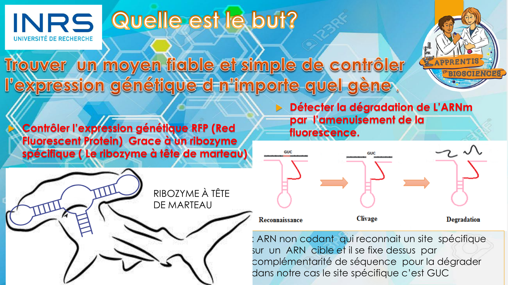
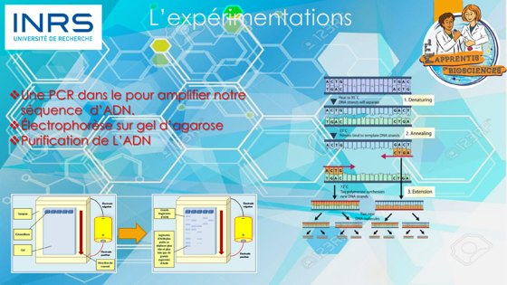
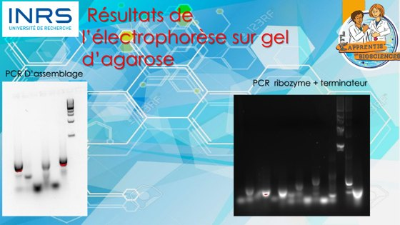
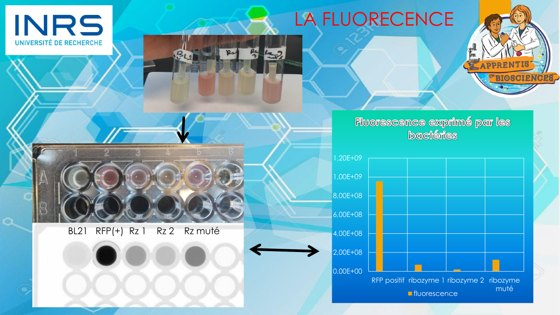

Scientific presentation archive
Biosciences exploration project
An experimental research question involving gene expression, gel images and fluorescence.
- Status
- Presentation archive
- Focus
- Research
- Tools and methods
- Experimental method / Scientific communication / Biosciences

Objective
Present an exploratory research question about controlling fluorescent-protein expression with a ribozyme.
Engineering work
- Explain the research question and working hypothesis.
- Organize an experimental workflow.
- Present gel and fluorescence observations.
- Communicate the study through a short illustrated presentation.
Outcome
The archived presentation contains workflow diagrams, gel images and a fluorescence comparison. Selected slides are included as presentation evidence, not as a new scientific publication.
Scope and limits
The date and exact individual experimental responsibilities are not established here. No medical application, peer-reviewed result or independent validation is claimed.
Archive gallery 3 items






Evidence and documentation
Archived biosciences presentation associated with the INRS outreach material. The acknowledgements slide and personal details are omitted.